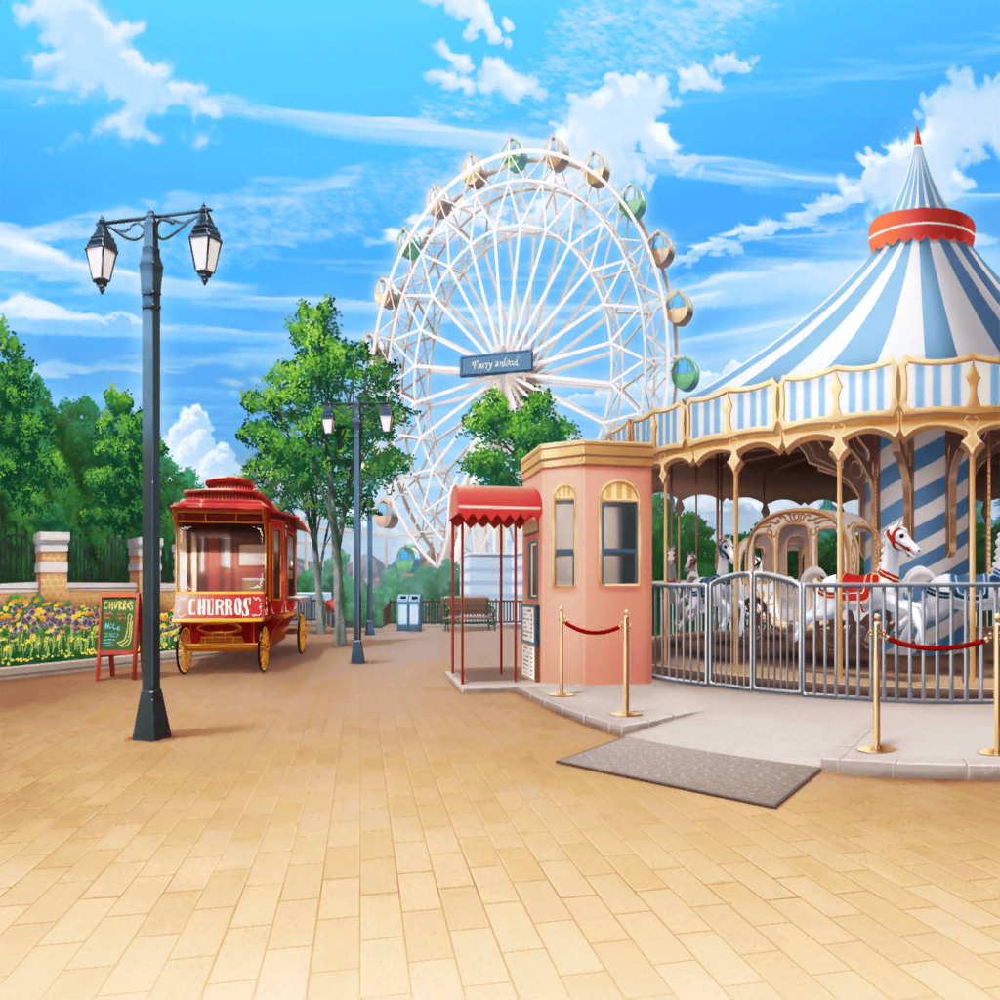

香澄
さ～や～！ りみり～ん！
香澄
はやくはやく～！！
りみ
香澄ちゃん待ってよー
沙綾
すっごく楽しみだったんだね。
遊園地行くって決まってから、ずっとソワソワしてたし
香澄
うん！
楽しみすぎて、昨日はぜんぜん寝られなかった！
沙綾
遊ぶのもいいけど、目的も忘れないでね。
新曲の歌詞を考えるためなんだから
りみ
何か思い浮かぶといいよね
香澄
だいじょーぶだよ。
遊園地だよ？
楽しいことたっくさんあるもん♪
香澄
いっぱい楽しめば、歌詞も書けるはず！
沙綾
そうだといいけど。
まあ、とにかく楽しもうか
りみ
最初は何に乗るの？
香澄
あれ！
ジェットコースター！！
りみ
いきなり！？
恐くないかな……
香澄
りみりんっ、私たちがついてるよ！
沙綾
そんなに高くないし、大丈夫じゃないかな
沙綾
いい機会だし、挑戦してみたら？
りみ
う、うん。頑張る！
香澄
よーし！ はりきって行こー！！
りみ
ふわぁ～。すごかった……
香澄
楽しかったね！ ドキドキしたよ～！
沙綾
急降下するところとか、けっこう迫力あったね
香澄
もう一回乗ってみる！？ 行くっ！？
りみ
もういいよ～
沙綾
それじゃー、次はどうしよっか？
香澄
優しい感じのやつ！ あれにしよ！
りみ
メリーゴーランドなら、ゆっくりだから怖くないかな
香澄
けってーい♪
香澄
怖かった……
りみ
香澄ちゃん、馬から落ちる寸前だったね
沙綾
はしゃいで後ろ振り向かないようにしないと
香澄
反省してます！
りみ
あはは。
遊園地来るの久しぶりだけど、すごく楽しいな
沙綾
私も久々！
けどやっぱ楽しいね！
香澄
うん！ 今度は有咲とおたえと……
みんなでいこうっ！
りみ
うん！ また楽しみが一つ増えたね
沙綾
で、いい歌詞は思いついた？
香澄
……あっ
沙綾
かんぺきに忘れてたな？
香澄
てへへ……
沙綾
環境を変えれば、
いつもとは違う感じの歌詞が思いつくかと思ったけど……
香澄
あっ、そうだっ！！
香澄
ジェットコースターみたいに、急降下する感じの……。
バビューン！ とか？
香澄
そーいうの、歌詞に採用してみたらどうかなっ？
りみ
うんうん、素敵だよ！
香澄ちゃんらしさも出てるし
沙綾
バビューンかー。
うーん、悪くないけど、もうちょっと考えないと
香澄
考えるなら、もっともっと楽しまなくちゃだよね！！
りみ
賛成♪
次はどこに行く？
沙綾
乗り物系が続いたから、次は……
香澄
お化け屋敷がいいな！！
りみ
えっ！？
香澄
いい歌詞を思いつくには、いろんな刺激が必要だもん♪
だからお化け屋敷に入ろー！！
りみ
む、むりむりむり～！！
本はいいけど『ワッ！』ってされるのはダメ～！